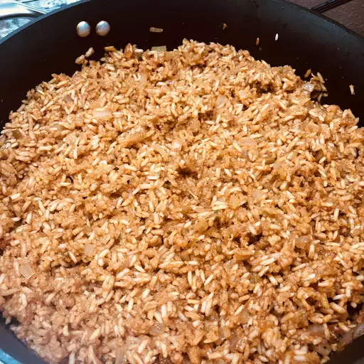

Mexican Rice!

This Mexican rice recipe makes a wonderful restaurant-style side dish for any Mexican dinner.
Ingredients
- 3 tablespoons vegetable oil
- 1 cup uncooked long-grain rice
- 1 teaspoon garlic salt
- 1/2 teaspoon ground cumin
- 1/4 cup chopped onion
- 2 cups chicken broth
- 1/2 cup tomato sauce
How to make Mexican Rice Step-by-Step
- Heat oil in a large saucepan over medium heat.
- Add rice and season with garlic salt and cumin.
- Cook, stir constantly, until puffed and golden.
- Add onion, cook and stir until onion has softened.
- Add chicken broth and tomato sauce, bring to a boil.
- Reduce heat to low, cover and simmer for 20 minutes.
Home